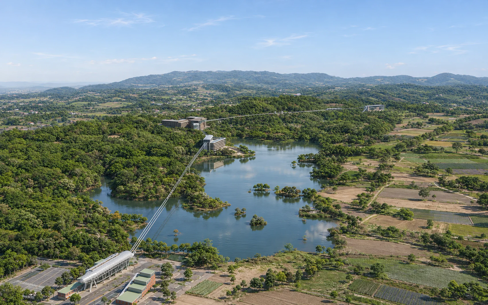
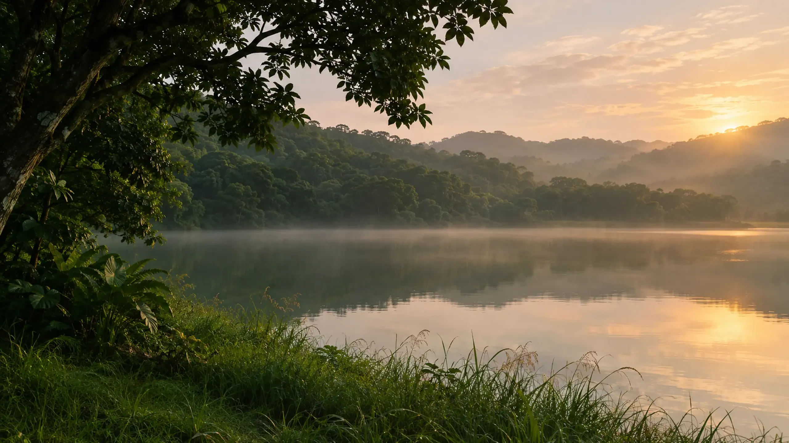
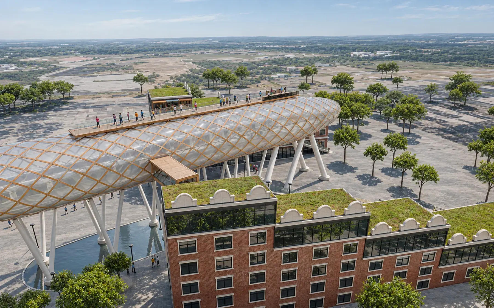
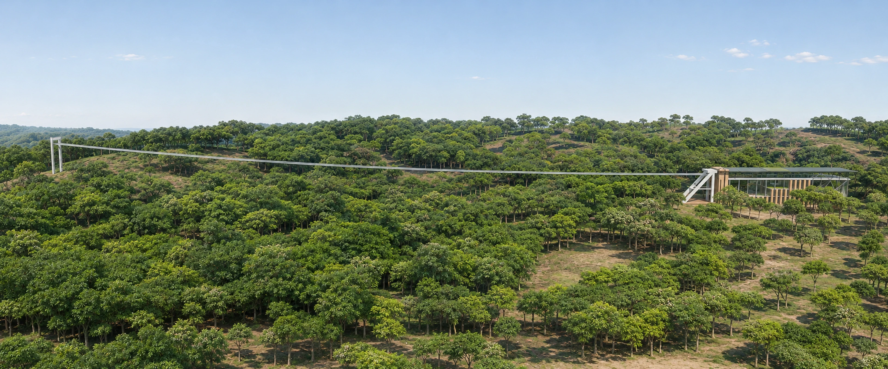
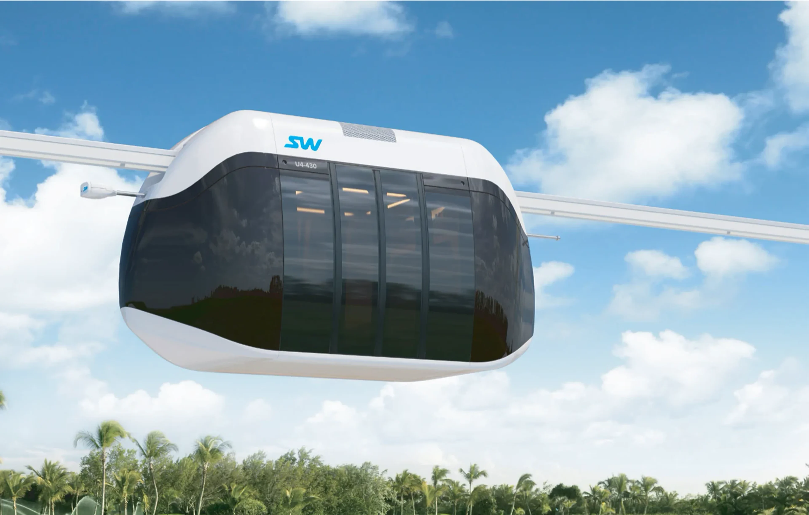
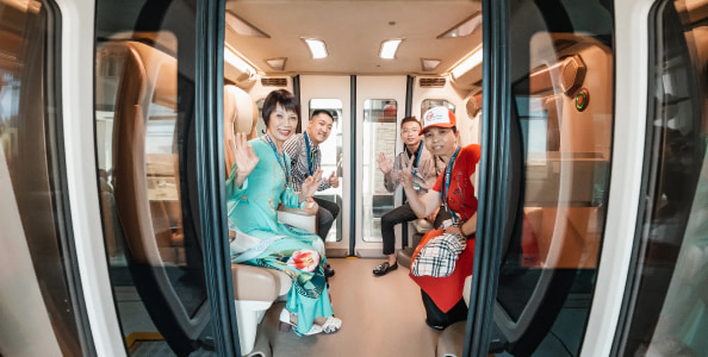
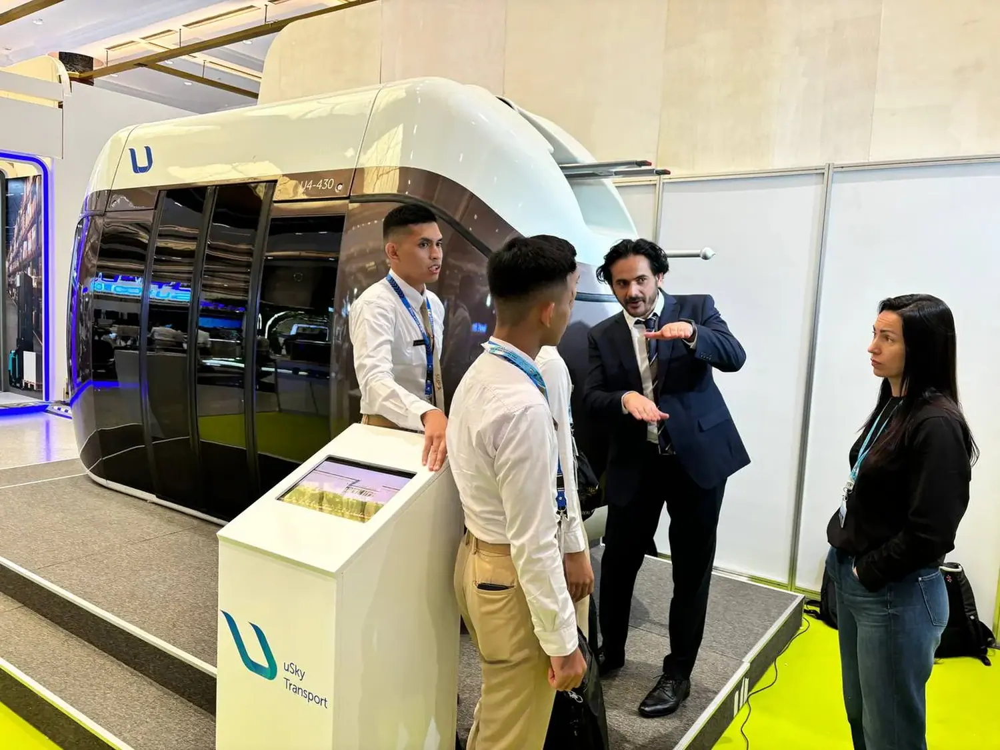
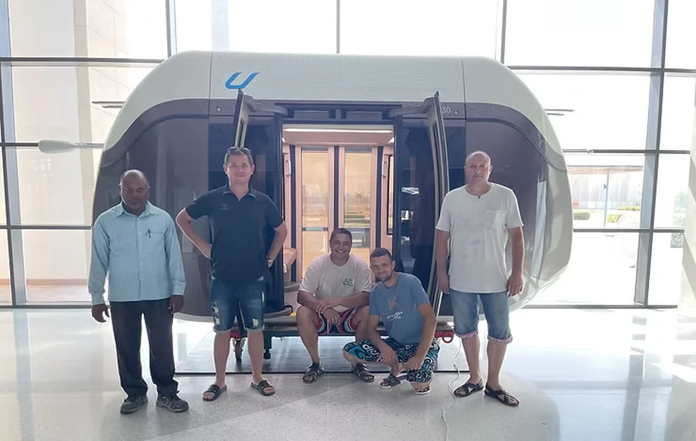
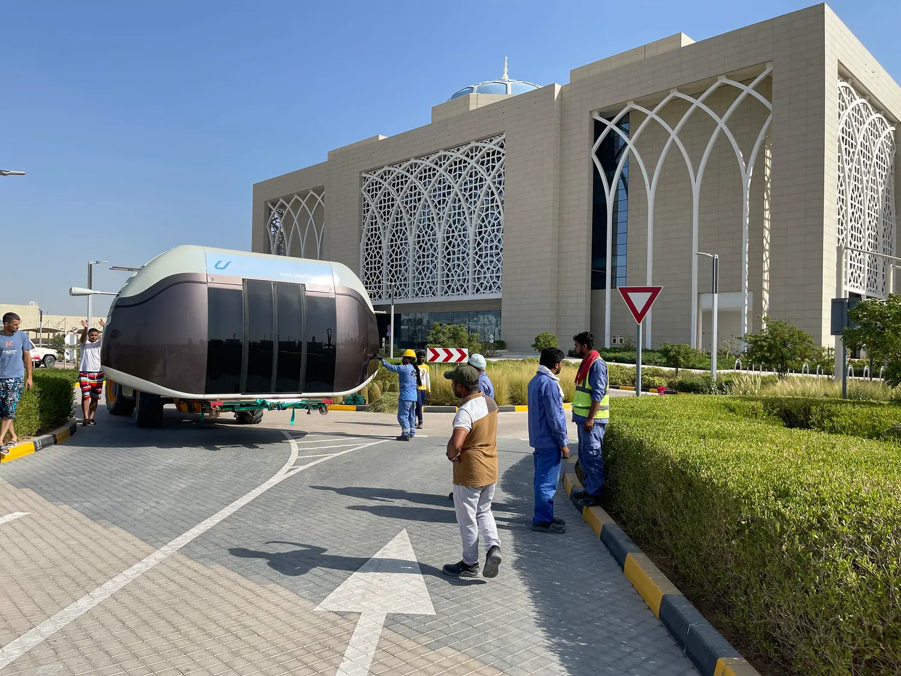
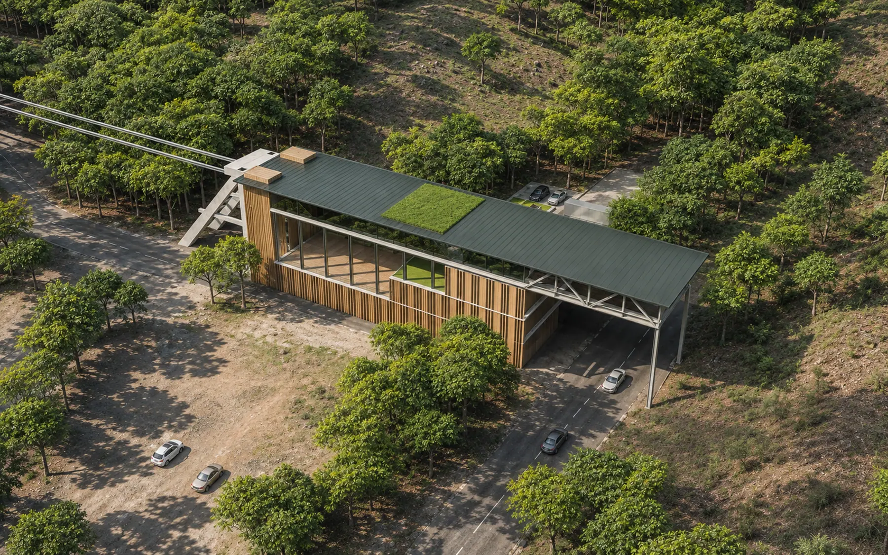

弦軌立體交通
LOW-IMPACT TRANSIT
以預力弦軌架設輕量化車廂，跨越湖面與丘陵，地面只需少量墩柱。

SKYTAXI
把土地留給湖光山色
低碳、低擾動的立體交通。



雲天新能源科技以弦軌運輸系統發展立體交通。車廂懸在上方弦軌之下，跨越湖面與丘陵，地面只需少量墩柱。
少開一條路，少砍一片林，讓湖岸與林地維持原本的樣子；旅客則在樹梢的高度，看見一座城市從未被看見的角度。
我們把車站、旅宿與在地商業一起設計，讓交通節點成為停留、住宿與消費的目的地，再以民間參與公共建設的方式，承擔興建與長期營運。
車頂走行，座艙懸於軌下。

電力驅動的弦軌車輛，
車頂走行裝置沿上方雙軌行走，
白色封閉車體懸在軌道之下，
深色連續窗帶，
讓乘客在跨站途中，
看湖岸、山城與林地。
墩柱之間跨距長，
地面留給原本的風景。





以民間參與公共建設，把立體交通帶進風景區與城市節點。

LOW-IMPACT TRANSIT
以預力弦軌架設輕量化車廂，跨越湖面與丘陵，地面只需少量墩柱。

STATION ＋ STAY
車站與旅館、商業設施整合設計，讓交通節點同時成為停留、住宿與消費的目的地。

BUILD · OPERATE · TRANSFER
依《促進民間參與公共建設法》推動興建、營運、移轉，以長期營運服務地方與遊客。
FOUR STATIONS · ONE LINE四站一線
串連新化老街、湖濱與新化林場，一日可遊，也可留宿。
以虎頭埤風景區為核心，四站全線以弦軌系統連通，搭配湖濱旅館與山城旅宿，形成一條湖山旅遊廊帶。
旅客從新化之門出發，在湖岸用餐、住宿，到山城上課與聚會，最後走進新化林場的林間。

T1 虎頭埤站｜新化之門
旅程的入口。光舟月台經空中通廊銜接階梯商店街上層，出閘即入街；光舟下方的虎埤水鏡保留地面公共穿越。
健康生活市集、風土餐桌、共享廚房，以及由道路側獨立進入的長壽診所與醫事專業服務。
看 T1 新化之門

纜車沿線的健康旅居：訓練、恢復與營養。
用新化食材練習配餐，
到山城練肌力與平衡，
回到湖岸舒展與休息。
把訓練、恢復與營養，
排進同一趟旅程，
帶回適合自己的
日常練習。
雲天新能源科技股份有限公司
臺南虎頭埤纜車 BOT 案民間申請人，專注於綠色立體交通系統的規劃、興建與營運。